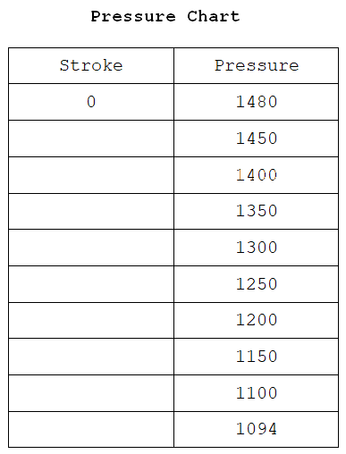
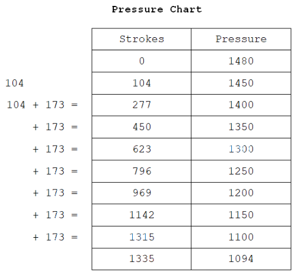
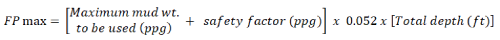

Pre-recorded Data
Original mud weight (0MW)..................................... ppg
Measured depth (MD) .......................................... ft
Kill rate pressure (KRP).............. psi @ ................. spm
Kill rate pressure (KRP).............. psi @ ................. spm
Drill String Volume
Drill pipe capacity........... bbl/ft x ........... length (ft) = .............. bbl
Drill pipe capacity........... bbl/ft x ........... length (ft) = .............. bbl
Drill collar capacity........... bbl/ft x ........... length (ft) = .............. bbl
Total drill string volume .................................... bbl
Annular Volume
Drill collar/open hole Capacity .......... bbl/ft x .......... length (ft) = .......... bbl
Drill pipe/open hole Capacity .......... bbl/ft x .......... length (ft) = .......... bbl
Drill pipe/casing Capacity .......... bbl/ft x .......... length (ft) = .......... bbl
Total barrels in open hole ..................................... bbl
Total annular volume ........................................... bbl
Pump Data
Pump output ................... bbl/stk @ ..................... % cflìdency
Surface to bit strokes :
Drill string pump output vo1ume ............ bbl ÷ ....... bbl/stk = ............... stk
Bit to casing shoe strokes :
Open hole pump output volume ............ bbl ÷ ........ bbl/stk = .............. stk
Bit to casing shoe strokes :
Annulus pump output volume ............ bbl ÷ ........ bbllstk = .............. stk
Maximum allowable shut-in casing pressure :
Leak-off test ........... psi, using ............... ppg mud weight @ cising setting of ............................... TVD
Kick data
SIDPP .............................................. psi
SICP ............................................... psi
Pit gain ........................................... bbl
True vertical depth ................................ ft
Calculations
Kill Weight Mud (KWM) = SIDPP .......... psi ÷ 0.052 + TVD .......... ft + 0MW .......... ppg
Initial Circulating Pressure (ICP)
= SIDPP .......... psi + KRP .............. psi = ............. psi
Final Circulating Pressure (FCP) = KWM ............ ppg x KRP .............. psi ÷ OMW ......... ppg
= ................ psi
Psi/stroke
ICP ............ psi — FCP ............. psi : strokes to bit .......... = ................. psi/stk
Case :
Original mud weight = ppg
Measured depth = ft
Kill rate pressure @ 50 spm = psi
Kill rate pressure @ 30 spm = psi
Drill string : drill pipe 5.0 inch — 19.5 lb/ft
capacity = bbl/ft
HWDP 5.0 inch - 49.3 lb/ft
capacity = bbl/ft
length = ft
drill collars 8.0 inch OD — 3.0 inch ID
capacity = bbl/ft
length = ft
Annulus :
hole size = inch
drill collar/open hole capacity = bbl/ft
drill pipe/open hole capacity = bbl/ft
drill pipe/casing capacity = bbl/ft
Mud pump = bbl/stk
Leak-off test with 9.0 ppg mud = psi
Casing setting depth = ft
Shut-in drill pipe pressure = psi
Shut-in casing pressure = psi
Pit volume gain = bbl
True vertical depth = ft
Drill string volume :
Drill pipe capacity =
HWDP capacity =
Drill collar capacity =
Total drill string volume
Annular volume :
Drill collar/open hole =
Drill pipe/open hole =
Drill pipe/casing =
Total annular volume
Strokes to bit =
Bit to casing strokes :
Bit to surface strokes :
Kill weight mud (KWM) :
Initial circulating pressure (ICP)
Final circulating pressure (FCP)
Pressure Chart
Pressure
Trip Margin (TM)
Case :
Yield point = lb/lOO sq ft
Dh = inch
Dp = inch
TM =
Determine psi/stk
Case :
Initial circulating pressure = psi
Final circulating pressure = psi
Strokes to bit = stk
psi/stk =
The pressure side of the chart will be as follows :

Adjust the strokes as necessary.
For line 2 : How many strokes will be required to decrease the pressure from 1480 psi to 1450 psi?
1480 psi — 1450 psi = 30 psi
30 psi ÷ 0.2891 psi/stk = 104 strokes
For lines 3 to 7 : How many strokes will be required to decrease the pressure by 50 psi increments?
50 psi ÷ 0.2891 psi/stk = 173 strokes
Therefore, the new pressure chart will be as follows :

Kill Sheet With a Tapered String
Note :
Whenever a kick is taken with a tapered drill string in the hole, interim pressures should be calculated for
a. the length of large drill pipe (DPL) and
b. the length of large drill pipe plus the length of small drill pipe
Case :
Drill pipe 1 : 5.0 inch — 19.5 lb/ft
capacity = bbl/ft
length = ft
Drill pipe 2 : 3-1/2 inch — 13.3 lb/ft
capacity = bbl/ft
length = ft
Drill pipe 2 : 3-1/2 inch — 13.3 lb/ft
capacity = bbl/ft
length = ft
Pump output = bbl/stk
Total strokes =
Data from kill sheet
Case :
Initial drill pipe circulating pressure (ICP) = psi
Final drill pipe circulating pressure (FCP) = psi
Determine interim pressure for the 5.0 inch drill pipe at 1063 strokes :
Determine interim pressure for 5.0 inch plus : 3-1/2 inch drill pipe (1063 + 381) = 1444 st rokes :
Plot data on graph paper :

Note :
After pumping 1062 strokes, if a straight line would have been plotted, the well would have been underbalanced by 178 psi
Kill Sheet for a Highly Deviated Well
Whenever a kick is taken in a highly deviated well, the circulating pressure can be excessive when the kill weight mud gets to the kick-off point (KOP).
If the pressure is excessive, the pressure schedule should be divided into two section :
1. from surface to KOP
2. from KOP to TD
The following calculations arc used :
Determine strokes from surface to KOP :
Determine strokes from KOP to TD :
Kill weight mud :
Initial circulating pressure :

Final circulating pressure :
Hydrostatic pressure increase from surface to KOP :
Friction pressure increase to KOP :
Circulating pressure when KWM gets to KOP :
Case :
Original mud weight (0MW) = ppg
Measured depth (MD) = ft
Measured depth @ KOP = ft
True vertical depth @ KOP = ft
Kill rate pressure (KRP) = psi
Pump output = bbl/stk
Drill pipe capacity = bbl/ft
Shut-in drill pipe pressure = psi
True vertical depth = ft
Strokes from surface to KOP :
Strokes from KOP to TD :
Total strokes from surface to bit :
Kill weight mud (KWM):
Initial circulating pressure (ICP) :
Final circulating pressure (FCP) :
Hydrostatic pressure increase from surface to KOP :
Friction pressure increase to TD :
Circulating pressure when KWM gets to KOP :
Compare this circulating pressure to the value obtained when using a regular kill sheet :
Using a regular kill sheet, the circulating drill pipe pressure would be 1165 psi.
The adjusted pressure chart would have 1041 psi on the drill pipe gauge.
This represents 124 psi difference in pressure, which would also be observed on the annulus (casing) side.
It is recommended that if the difference in pressure at the KOP is lOO psi or greater,
then the adjusted pressure chart should be used to minimize the chances of losing circulation.
Prerecorded Information
Maximum Anticipated Surface Pressure
Two methods are commonly used to determine maximum anticipated surface pressure :
Method 1 : Use when assuming the maximum formation pressure is from TD :
Step 1
Determine maximum formation pressure (FPmax):

Step 2
Assuming 100% of the mud is blown out of the hole, determine the hydrostatic pressure in the wellbore :
Note : 70% to 80% of mud being blown out is sometimes used instead
HPgas = gas gradient (psi/ft) x total depth (ft)
Step 3
Determine maximum anticipated surface pressure (MASP):
MASP = FPmax - HPgas Case :
Proposed total depth = ft
Maximum mud weight = ppg
Safety factor = ppg
Gas gradient = psi/ft
Step 1
Determine maximum formation pressure (FPmax):
Step 2
Assuming 100% of the mud is blown out of the hole, determine the hydrostatic pressure in the wellbore :
Step 3
Determine maximum anticipated surface pressure (MASP):
Method 2 :
Use when assuming the maximum pressure in the wellbore is attained when the formation at the shoe fractures :
Case :
Proposed casing setting depth = ft
Estimated fracture gradient = ppg
Safety factor = ppg
Gas gradient = psi/ft
Step 1
Determine fracture pressure (psi):
Step 2
Determine the hydrostatic pressure of gas in the wellbore (Hpgas):
HPgas = 0.12 x 4000 ft = 480 psi
Step 3
Determine the maximum anticipated surface pressure (MASP), psi ;
Sizing Diverter Lines
Determine diverter line inside diameter (inch),
equal to the area between inside diameter of the casing and the outside diameter of drill pipe in use
Diverter line ID inch =
Case :
Casing ID = inch
Drill pipe = inch
Diverter line ID, inch =
Formation Pressure Tests
Two methods of testing :
- Equivalent mud weight test
- Leak-off test
Precautions to undertaken before testing :
1. Circulate and condition the mud to ensure the mud weight is consistent throughout the system.
2. Change the pressure gauge (if possible) to a smaller increment gauge so a more accurate measure can be determined.
3. Shut-in the well.
4. Begin pumping at a very slow rate — 1/4 to 1/2 bbl/min.
5. Monitor pressure, time, and barrels pumped.
6. Some operators may have different procedures in running this test, others may include :
a. Increasing the pressure by 100 psi increments, waiting for a few minute, then increasing by another 100 psi, and so on,
until either the equivalent mud weight is achieved or until Leak-off is achieved.
b. Some operators prefer not pumping against a closed system. They prefer to circulate through the choke and increase back pressure by slowly closing the choke.
In this method, the annular pressure loss should be calculated and added to the test pressure results.
Testing to an equivalent mud weight :
1. This test is used primarily on development wells where the maximum mud weight that will be used to drill the next interval is known.
2. Determine the equivalent test mud weight (ppg), two methods are normally used.
Method 1 :
Add a value to the maximum mud weight that is needed to drill the interval.
Case :
Maximum mud weight = ppg
safety factor = ppg
quivalent test mud weight (ppg) =
Method 2 :
Subtract a value from the estimated fracture gradient for the depth of the casing shoe.
Case :
Estimated formation = ppg
Safety factor = ppg
Equivalent test mud weight (ppg) =
Determine surface pressure to be used :
Case :
Mud weight = ppg
Casing shoe TVD = ft
Equivalent test mud weight = ppg
Surface pressure =
Testing to leak-off test
1. This test is used primarily on wildcat or exploratory wells or where the actual fracture is not known.
2. Determine the estimated fracture gradient from a “Fracture Gradient Chart”.
3. Determine the estimated leak-off pressure.
Case :
Mud weight = ppg
Casing shoe TVD = ft
Estimated fracture gradient = ppg
Estimated leak-off pressure =
Maximum Allowable Mud Weight From Leak-off Test Data
Case :
Leak-off pressure = psi
Casing shoe TVD = ft
Mud weight in use = ppg
Max allowable mud weight (ppg) =
Maximum Allowable Shut-in Casing Pressure (MASICP) also called maximum allowable, shut-in annular pressure (MASP)
Case :
Maximum allowable mud weight = ppg
Mud weight in use = ppg
Casing shoe TVD = ft
MASICP =
KICK TOLERANCE FACTOR (KTF)
Case :
Maximum allowable mud weight = ppg
Mud weight in use = ppg
Casing shoe TVD = ft
Well depth TVD = ft
KTF =
Maximum Surface Pressure From Kick Tolerance Data
Maximum surface pressure = kick tolerance factor (ppg) x 0.052 x TVD (ft)
Maximum Formation Pressure (FP) That Can be Controlled When Shutting-in a Well

Case :
Kick tolerance factor = ppg
Mud weight = ppg
True vertical depth = ft
Maximum FP (psi) =
Maximum Influx Height Possible to Equal Maximum Allowable Shut-in Casing Pressure (MASICP)
Case : Determine the influx height (ft) necessary to equal the
Maximum allowable shut-in casing pressure (MASICP) using the
Following data :
Data : Maximum allowable shut-in casing pressure = psi
Mud gradient = psi/ft
Gradient of influx = psi/ft
Influx height (ft) =
Maximum Influx, Barrels to Equal Maximum Allowable Shut-in Casing Pressure (MASICP)
Case :
Maximum influx height co equal MASICP = ft
Annular capacity — drill collars/open hole = bbl/ft
Drill collar length = ft
Annular capacity — drill pipe/open hole = bbl/ft
Step 1
Determine the number of barrels opposite drill collars :
Step 2
Determine the number of barrels opposite drill pipe :
Influx height (ft) opposite drill pipe :
Barrels opposite drill pipe :
Step 3
Determine maximum influx (bbl) to equal maximum allowable shut-in casing pressure :
Adjusting Maximum Allowable Shut-In Casing Pressure For an Increase in Mud Weight
MASICP = PL — [D x(mud wt2 — mud wt1)] O.052
Where ;
MASICP = maximum allowable shut-in casing (annulus) pressure (psi)
PL = leak-off pressure (psi)
D = true vertical depth to casing shoe (ft)
Mud wt2 = new mud weight (ppg)
Mud wt1 = original mud weight (ppg)
Case : Leak-off pressure at casing setting depth (TVD) of ft
Was psi with ppg in use. Determine the maximum
Allowable shut-in casing pressure with a mud weight of
ppg :